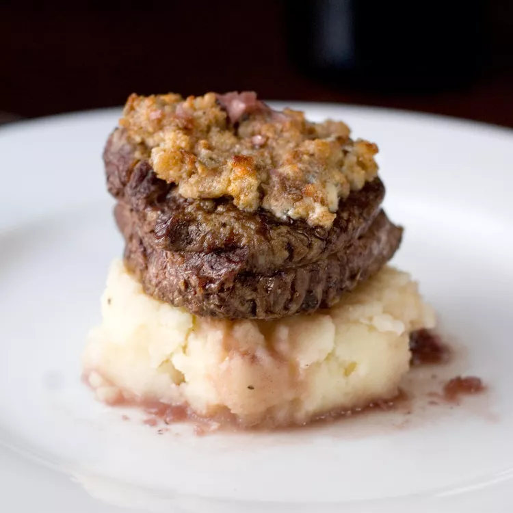

Blue Cheese Crusted Filet Mignon with Port Wine Sauce

Description
I used a nice light sauce on this iconic special occasion dish--lobster thermidor--rather than the thick, cheesy sauce popular in the '80s. Lobster is sweet and rich tasting on its own, so the lighter sauce makes so much sense. And what's even better, you can prep these ahead of time and just pop them in the oven when your guests arrive!
Ingredients
- 2 (1 1/2 pound) live lobsters
- 1/4 cup butter
- 1 shallot, minced
- 1/4 cup all-purpose flour
- 1/2 teaspoon salt
- 1/8 teaspoon ground black pepper
- 1 1/2 cups milk
- 1/2 cup shredded Swiss cheese
- 1 tablespoon butter
- 1/4 cup shredded Swiss cheese
- 1 tablespoon chopped fresh parsley
Steps
- Bring a large pot of salted water to a boil. Plunge 2 live lobsters head-first into the boiling water; cover the pot tightly, return to a boil, and cook lobsters until they turn bright red and their meat is opaque and tender, 8 to 10 minutes. Drain lobsters and set aside until cool enough to handle.
- Preheat oven to 400 degrees F (200 degrees C). Line a baking sheet with aluminum foil.
- Remove lobster meat from the shells, reserving shells. Chop the meat into bite-size pieces.
- Melt 1/4 cup butter in a saucepan over medium heat. Stir in shallot and cook until softened and translucent, about 2 minutes. Stir in flour, salt, and pepper until smooth. Gradually pour in milk, stirring constantly, until thickened, about 5 minutes. Stir in 1/2 cup Swiss cheese until melted. Remove from heat and fold in lobster meat.
- Fill lobster shells with the lobster mixture and place on the prepared baking sheet.
- Melt 1 tablespoon butter in a small skillet over medium heat. Stir in 1/4 cup Swiss cheese and parsley; cook until melted, about 1 minute. Spoon mixture over lobster filling.
- Bake in the preheated oven until golden brown, about 10 minutes.